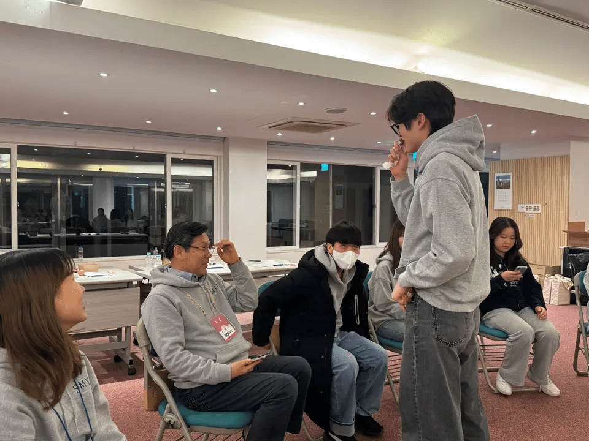
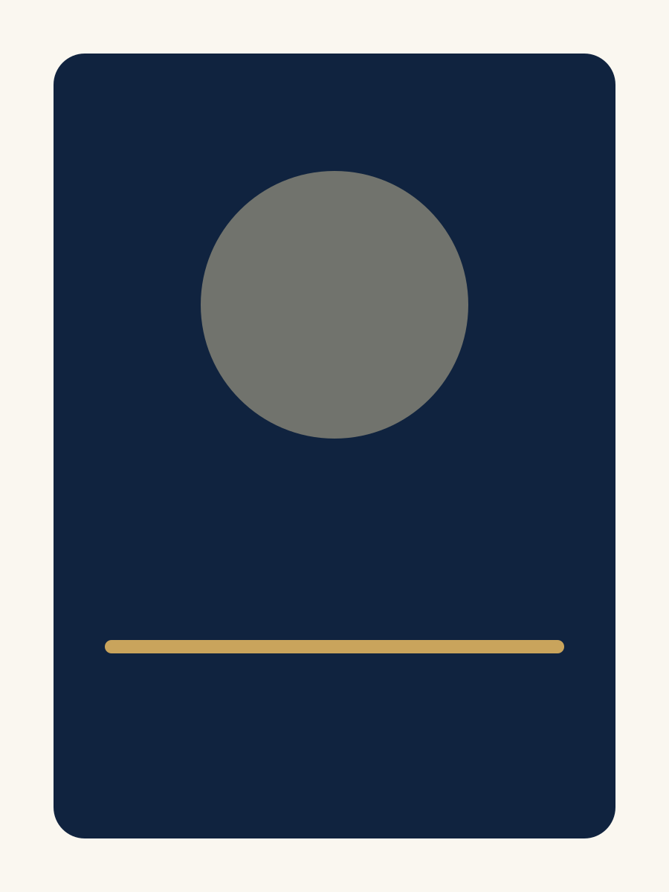

Archive study · exposure sequence
Light / Time / Memory
00 · Ready
무대의 순간을
한 장씩 다시 펼칩니다
공연 사진과 포스터, 영상으로 남은 기록을 빛과 시간의 순서로 천천히 만나보세요.
2026 · 공연 기록
기록 펼치기
→
갤러리 보기
↗

01
02
04
05
01 / 사진
기록의 시작점

02
/ 포스터
▶
03
/ 영상
Sequence complete · 03 records